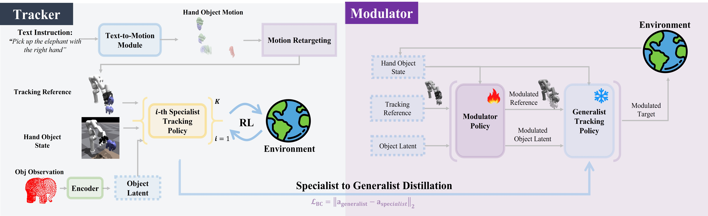

Dynamic Modulation for Adaptive and Generalizable Dexterous Manipulation Tracking
CVPR 2026
Language is a natural way to command robots, but converting a single instruction into a long-horizon, contact-rich hand–object interaction remains challenging: synthesized references are noisy, human-to-robot retargeting introduces embodiment bias, and fixed-reference tracking lets small errors snowball. We address this with AdaDexTrack, a modulator-in-the-loop framework for language-conditioned manipulation tracking. A distilled generalist tracker serves as the skill carrier, while a tightly aligned modulator performs three feedback corrections: reference modulation (continual adjustment of what to track), object-latent modulation (online adaptation of the object representation to recruit suitable skills), and positional-target modulation (small state-dependent refinements for execution).
The tracker is learned via large-scale specialist to generalist distillation on a corpus of language-conditioned hand–object trajectories; the modulator is trained with RL under the same task objective, ensuring tight coupling. Across large-scale evaluations, AdaDexTrack consistently outperforms prior SOTA on unseen-trajectory and unseen-object sets in both average tracking error and success rate, demonstrating robustness and generalization. We further show zero-shot sim-to-real transfer on real hardware, where adding the modulator yields substantial gains over a tracker-only variant. AdaDexTrack reframes language-conditioned dexterous manipulation as modulated tracking, replacing the open-loop, fixed-reference tracking with in-loop modulation that adjusts the reference, object latent, and positional target, yielding drift-resistant execution from noisy text references.
There are four steps within the AdaDexTrack framework:

@InProceedings{Adalibieke_2026_CVPR,
author = {Adalibieke, Jianibieke and Han, Qianwei and Liu, Xueyi and Qin, Yuzhe and Yi, Li},
title = {AdaDexTrack: Dynamic Modulation for Adaptive and Generalizable Dexterous Manipulation Tracking},
booktitle = {Proceedings of the IEEE/CVF Conference on Computer Vision and Pattern Recognition (CVPR)},
month = {June},
year = {2026},
pages = {28021-28031}
}